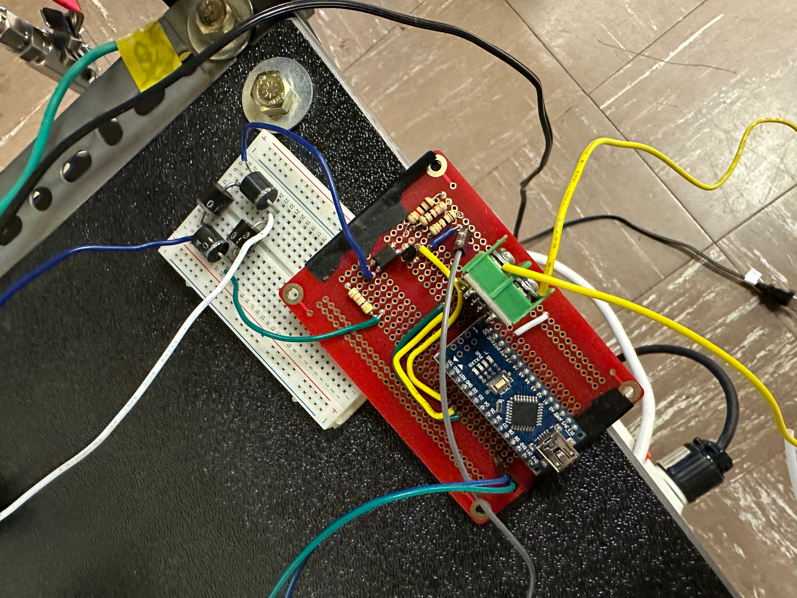
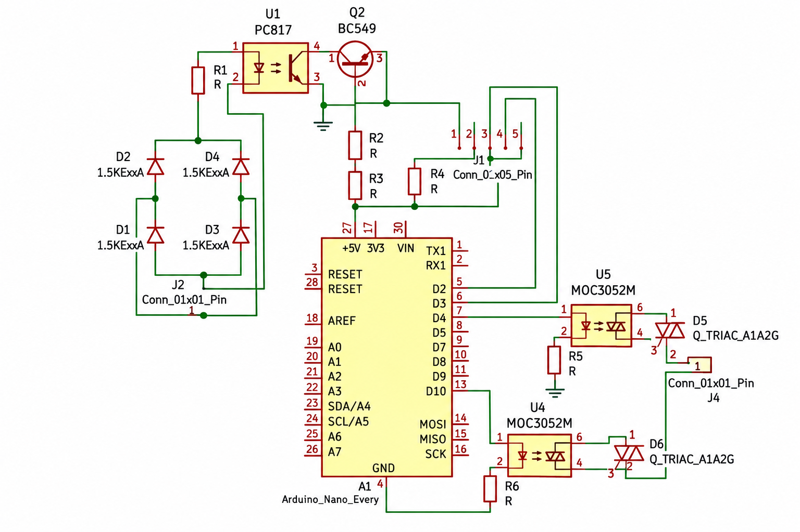
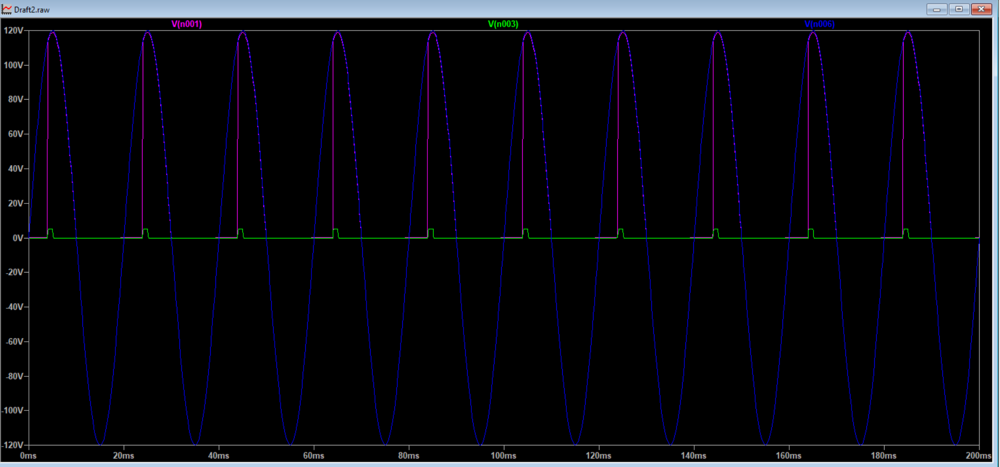
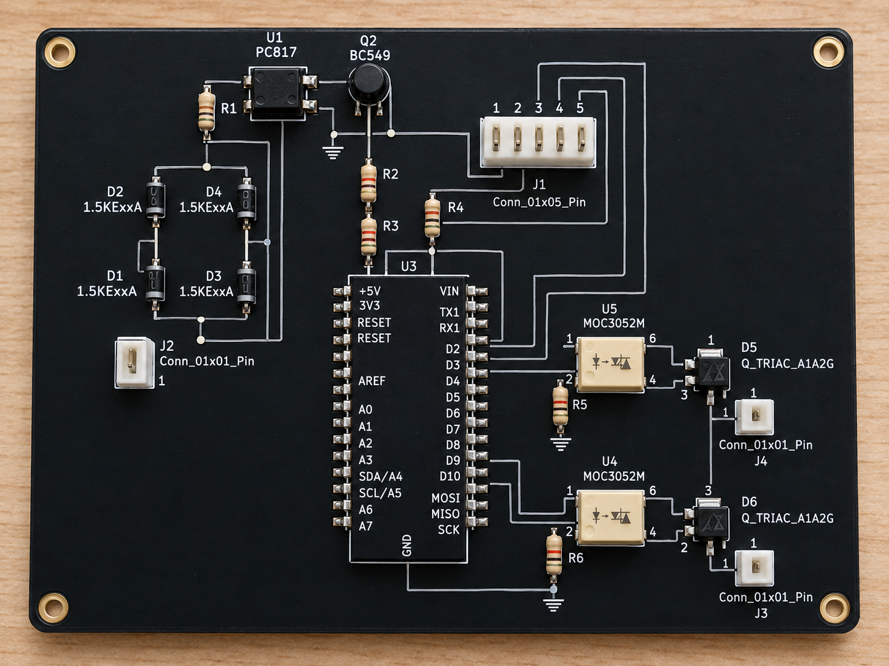

Sabatier Fuel Reactor
Power-control and temperature-regulation work for a Sabatier reactor using PCB design, simulation, and PID control.
Overview
The Sabatier Fuel Reactor is part of UBC Mars Colony's work toward producing fuel using resources available on Mars. Since the Martian atmosphere provides a carbon-dioxide-rich environment, the larger reactor system explores how CO₂ can be processed through the Sabatier reaction to produce methane rather than relying entirely on propellant transported from Earth.
My work focused on the power electronics and temperature-control architecture of the reactor. I worked on understanding and validating the existing switching circuitry, replacing loose prototype wiring with dedicated PCBs, and integrating temperature feedback through PID control.
From Prototype Wiring to a Control System
When I began working with the reactor electronics, the control circuitry relied heavily on loose point-to-point wiring between components. The setup worked well for early experimentation, but as more switching, sensing, and control hardware was added, the wiring became harder to organize, troubleshoot, and reproduce.
Rather than immediately transferring the circuit onto a PCB, I first needed to understand exactly how power was being controlled. The heater required a predictable method of switching AC power, while the temperature-control system needed a way to continuously adjust that power based on the thermal state of the reactor.

Understanding the Power Electronics
The power-control architecture used zero-cross detection, TRIAC switching, and a MOSFET-based control stage. The objective was to control power delivery to the reactor heater in coordination with the AC waveform rather than switching the load at arbitrary points in the electrical cycle.
I broke the circuit into functional stages so I could understand how the incoming waveform, zero-cross detector, control pulse, and TRIAC interacted. This was important because a circuit could be electrically connected correctly while still producing incorrect switching timing.
Validating the Switching Behaviour in LTSpice
Before moving the design onto a physical PCB, I recreated the key switching circuit in LTSpice. This allowed me to validate the behaviour of the zero-cross and pulsating circuit without introducing PCB fabrication or hardware faults into the troubleshooting process.
I compared the control signals with the AC waveform to understand when the circuit was switching and whether the generated pulses appeared at the intended point in the cycle. The simulation gave me a much clearer picture of the dynamic behaviour than a schematic alone could provide.
This became the validation step between understanding the original circuit and redesigning it as dedicated hardware.


Replacing Loose Wiring with Dedicated PCBs
Once I understood and validated the switching architecture, I transferred the system into KiCad. My goal was to replace the loose wiring with purpose-built power-electronics PCBs that defined the critical connections directly on the board.
I first recreated the circuit as a schematic and worked through the connections between the zero-cross stage, switching components, control inputs, and external interfaces. I then selected footprints and converted the schematic into the physical PCB layout.
Moving to a PCB introduced another layer of engineering beyond simply reproducing the circuit. Component placement, connector accessibility, board dimensions, routing, physical footprints, and the separation of different functional sections all had to work together.

The PCB changed the system from a collection of individually wired components into a repeatable electrical architecture. Connections that previously had to be recreated manually were now defined by the board, making the system cleaner, easier to trace, and easier to integrate with the rest of the reactor.
Closing the Loop with Temperature Control
Controlling electrical power was only half of the problem. The system also needed to determine how much heating the reactor actually required.
I worked with both the hardware and software of a PID-controlled temperature sensing system. The temperature sensor continuously measured the reactor condition and returned that value to the controller. The measured temperature could then be compared against the desired operating setpoint.
Instead of operating the heater at a fixed input, the PID controller used the temperature error and its behaviour over time to determine the required correction. That output could then feed back into the heater-control architecture.
Connecting Temperature Control to Power Delivery
This was where the different pieces of my work came together. The PID controller determined what the reactor needed thermally, while the power-electronics system provided the mechanism for changing the energy delivered to the heater.
The complete control path could therefore be treated as one closed system:
Why the Hardware Redesign Mattered
The value of moving to dedicated PCBs went beyond making the wiring look cleaner. It made the control system more structured and repeatable.
With the critical electrical paths defined on the PCB, troubleshooting could focus on functional sections instead of tracing individual loose connections. It also created clearer interfaces between the switching electronics, controller, sensors, and reactor hardware.
For me, the project became a progression from understanding an experimental circuit to developing something closer to an engineered subsystem: simulate the behaviour first, define the architecture, package it into hardware, and then connect it to the physical process being controlled.
Engineering Workflow
Outcome
My work helped move the reactor controls from a loosely wired prototype toward a more integrated power and temperature-control architecture. I validated the zero-cross and pulsating switching behaviour in LTSpice before hardware implementation, translated the power electronics into dedicated PCBs, and worked with PID feedback to connect reactor temperature directly to heater control.
The development path became: prototype wiring → circuit understanding → LTSpice validation → PCB integration → temperature sensing → PID feedback → controlled power delivery .
What began as separate switching and sensing circuits became a coordinated control system built around the actual reactor requirement: deliver power predictably, measure the thermal response, and continuously adjust the system toward the required operating temperature.